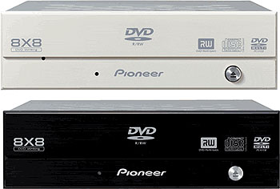

Use DVRFlash to flash your drive, it support all DVR Pioneer's drives (including A09/109).
With this one, you can flash without any limitation on downgrade,
imposed by Pioneer on upgdvd.exe
Works under DOS, Windows (any version), and Linux.
Firmwares
DVR-A03/103
Product RETIRED!
(Pioneer do not support this drive anymore!)
v2.00 (RPC-1 + 2x recording for ALL RITEKG03 medias)
v2.00 (RPC-1 + 2x recording for ALL DVD-R medias)
DVR-A04/104
Product RETIRED!
(Pioneer do not support this drive anymore!)
v1.40 (RPC-1 + 2x for ALL RITEKG03 medias)
v1.40 (RPC-1 + 2x for ALL DVD-R medias)
DVR-A05/105
Product RETIRED!
(Pioneer do not support this drive anymore!)

v1.33 (RPC-1 + unlock ripping speed only)
v1.33 (RPC-1 + unlock ripping speed + 2x for ALL RITEKG03)
v1.33 (RPC-1 + unlock ripping speed + 2x for ALL Lead Data)
v1.33 (RPC-1 + unlock ripping speed + 2x for ALL DVD-R medias)
DVR-A06/106
Product RETIRED!
(Pioneer do not support this drive anymore!)

v1.07
(RPC-1 + unlock ripping speed + 2x for ALL DVD-R medias)
v1.08 (RPC-1 + unlock
ripping speed only)
DVR-A07/107
Product RETIRED!
(Pioneer do not support this drive anymore!)
v1.21 (RPC-1 + unlock ripping speed only)
v1.18 (RPC-1 + unlock ripping speed + 8x for ALL DVDs medias)
DVR-A07XL(A/B)/107XL(A/B)
Product RETIRED!
(Pioneer do not support this drive anymore!)

v1.21 (RPC-1 + unlock ripping speed only)
v1.18 (RPC-1 + unlock ripping speed + 8x for ALL DVDs medias)
DVR-A08/108
Product RETIRED!
(Pioneer do not support this drive anymore!)
(support DVD-R @ 16x max and DVD-RW @ 4x max)
v1.20 (RPC-1 + unlock ripping speed only)
For those who wants to convert a
DVR-A08/108 drive into a true DVR-A08DX/108DX
(aka PIODATA)
Product RETIRED!
(Pioneer do not support this drive anymore!)
(support DVD-R @ 16x max and DVD-RW @ 4x max)
v1.18 (RPC-1 + unlock ripping speed only)
DVR-A08DX/108DX (aka PIODATA)
Product RETIRED!
(Pioneer do not support this drive anymore!)
(support DVD-R @ 16x max and DVD-RW @ 4x max)
v1.18 (RPC-1 + unlock ripping speed only)
DVR-A08XL(A/B)/108XL(A/B)
Product RETIRED!
(Pioneer do not support this drive anymore!)
(support DVD-R @ 16x max and DVD-RW @ 4x max)
v1.14 (RPC-1 + unlock ripping speed only)
v1.14 (RPC-1 + unlock ripping speed + 8x, 12x and 16x for MANY DVDs medias)
DVR-110D
Remember, if it was useful for you, please donate.